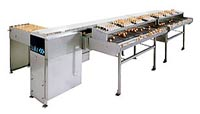
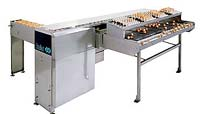
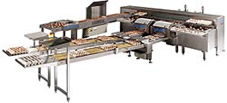
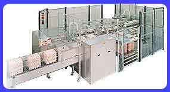

через шпилястий накопичувач, або спеціальний
навантажувач, або сполученням накопичувача з навантажувачем
через шпилястий накопичувач, або спеціальний
навантажувач, або сполученням накопичувача з навантажувачем
через шпилястий накопичувач, або спеціальний навантажувач,
або сполученням накопичувача з навантажувачем
Запатентована система овоскопирования
+
+
+
Самозавантажні осередки для зважування яєць із високої
точністю й автоматичною установкою на нуль
+
+
+
Кількість автоматичних пакувальних ліній
6
8
8-12
Максимальна потужність кожного пакувальника
50 коробка (18,000 яєць)
60 коробка (21 600 яєць) у годину
85 коробка (30 600 яєць) у годину
Можливість установки в машину розвантажників тари,
пакувальників і пристроїв для закривання будь-якого виду прокладок
+
+
+
Можливість використання комп'ютера для
установок програм сортування, зміни вагових категорій, відновлення даних,
і т.д. (Комп'ютерна програма російською мовою)
+
+
+
Можливість установки системи струминної
маркування яєць із нанесенням назви й логотипа підприємства, штампування
і наклеювання етикеток на прокладки.
+
+
+
Наявність як правобічних,так і лівосторонніх моделей
+
+
+
Серія сортувально-пакувальних машин ARDENTA:
Серія обладнана такими пристроями
Система з оптимальним використанням продуктивності сортувальників
Високо-технологічна напівавтоматична система вибракування з можливістю
установки (за бажанням) автоматичної системи виявлення тріщин і бруду
Підтримка гігієнічних стандартів протягом сортувального процесу
Динамічна система зважування з автоматичною установкою на нуль
Запатентована унікальна система контролю
Зроблене укладання яйця в лотки
Прецизійне керування виробничим процесом
Кодування й отслеживаемость
Зручна для обслуговування конструкція з нержавіючої сталі
Система завантаження:
1. З пікового накопичувача;
2. З навантажувача;
3. Змішана - з пікового накопичувача й з навантажувача (In/Off line
версія)
+
+
+
+
+
+
Завантажувальний стіл
6-ти рядний, з нержавіючої сталі
12-ти рядний, з нержавіючої сталі
Система вибракування: Одночасно постачена антибликовыми
лампами розсіяного світла; напівавтоматичної системою виявлення дефектів
- IRUS і автоматичною системою виявлення тріщин (за бажанням).
+
+ автоматичною системою виявлення бруду (за бажанням)
Система зважування: Динамічна, при проходженні
яйця через осередок-датчик, що дає високу точність зважування
+
+
Сортування З одиночним безперервним ланцюгом яєць
і металевими ґратами з нержавіючої стали
+
+ рамкою з нержавіючої сталі
Маркування яєць
Маркировочный принтер з 1 друкуючою головкою
Маркировочный принтер з 2 друкуючими головками
Число пакувальних ліній
8-14 (кожна макс. по 85 коробку / година)
8-14 (кожна макс. по 85 коробку / година)
Система контролю: Через процесор ПК по мережі CAN-network
c прецизійним програмним забезпеченням, також керуючим струминним маркуванням
і швидкістю конвеєра
+
+
Керування виробничим процесом: дисплей
на передній і задній сторонах над кожною лінією з індикацією сортування
й інформацією про поточний процес
+
+
Яйцесортировочные машини фірми Staalkat зі столом з ручний
упакуванням
Продуктивність машин становить 9.000 яєць у годину (INTER COMPACTA) И
14.000 яєць у годину (ULTRA COMPACTA). Кожна з установок володіє високим
співвідношенням продуктивності на оператора й вимагає невеликий виробничої
площі для досягнення максимальної ефективності. Компактні сортировальные
машини Staalkat сконструйовані так, щоб максимально спростити їхнє обслуговування.
Зроблені з нержавіючої сталі
Ultra Compacta

Обслуговуючий персонал 4-5 чоловік
Сортування/зважування механічна система зважування
Кількість сортувальних ліній 4-8
Електроживлення 220 У, одна фаза, 50 Гц. (інші варіанти за замовленням)
Споживана потужність 0,55 Квт/година
Розміри 2,45х4,80=11,76 кв.м. (без пікового накопичувача)
Додаткове встаткування
автоматичний піковий накопичувач зі зворотним транспортером
ручний напівавтоматичний підйомник з вакуумним захватом,
подающий одночасно 6х5 яєць на завантажувальний стіл
ротаційний завантажник, що подає одночасно 30 яєць
на завантажувальний стіл
система овоскопирования
пристрій маркування
загальний лічильник яєць
Inter Compacta

Сортування/зважування механічна система зважування
Обслуговуючий персонал 3-4 чоловік
Кількість сортувальних ліній 4-7
Електроживлення 220 У, одна фаза, 50 Гц. (інші варіанти за замовленням)
Споживана потужність 0,25 Квт/година
Розміри 2,34х2.36=5,52 кв.м. (без пікового накопичувача)
Додаткове встаткування
автоматичний піковий накопичувач зі зворотним транспортером
ручний напівавтоматичний підйомник з вакуумним захватом,
подающий одночасно 3х5 яєць на завантажувальний стіл
система овоскопирования
пристрій маркування
загальний лічильник яєць
FRG20

Розвантажник для 6,12 і 18-рядних завантажувальних стовбурів:

Яйцезагрузочная система використається:
Для розвантаження яєць на складені підношення
Для розвантаження яєць через піковий накопичувач прямо на лотки в комбінації
с завантаженням на складені підношення, так звана in/off-line - версія
Ці можливості забезпечують ефективне розвантаження яєць на сортувальник,
для 6, 12 і 18 -рядних версій завантажника. завантажник може працювати практично
с будь-якими типами лотків. Низький рівень шуму й корпус із нержавіючої
сталі гарантує професійну підготовку яєць до сортування. Запатентована система
контролю дозволяє миттєво виявити помилку в процесі на дисплеї і відразу
усунути її. Старт-стопный механізм експлуатації робить зношування навантажувача
мінімальним.
Можливості електронних детекторів розвантажника:
Виявлення розвантаження на стовбур
При правильному положенні стовбура детектор автоматично включається,
при відхиленнях подається сигнал на дисплей, потім процесор зупиняє завантажувальну
лінію й завантажник продовжує працювати як звичайно, без простою.
Виявлення порожніх лотків
Після виявлення порожніх, неповних лотків або лотків з побитими яйцями
електронними датчиками, ці лотки направляються на окрему лінію, що також
важливо при них повторному використанні
Додаткова інформація - у Харкові по тел. (057) 752-80-82,
757-23-93;
факс +38(057) 720-56-70; e-mail: ekstukraine@ukr.net
Телефони представництв в інших містах тут: